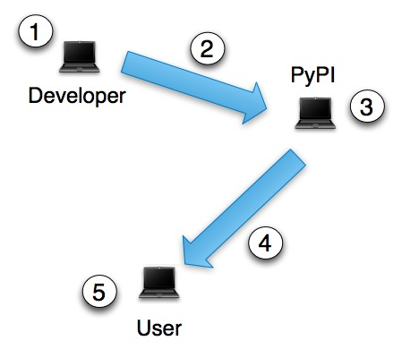

The Python Packaging Ecosystem
If you’re here looking for concise information on how to install
Python distributions, please see
basic distribution installation.
If you’re looking for concise instructions for creating
and distributing your own distributions, please see
basic distribution creation.
To learn more general information about how the pieces of the Python
packaging ecosystem fit together, read on.
The Big Picture

The Python packaging ecosystem consists of the following major
components:
- Users
- Users (5) of Python who would like to install third-party modules
(see distributions below) on their system.
- Distributions
- Juicy and delicious third-party Python modules, ripe for the
picking. :) See distribution.
- Python installations
- You might be using your system Python (the one that came installed
on your OS), or you might have built and installed your own. Each
Python installation can have its own set of installed
distributions.
- Virtual environments
- A Python installation will often have one or more named virtual
environments set up (such that you can install distributions into
the named environment rather than the Python installation
itself). See Virtual Environments for more about virtual enviroments.
They are very easy to set up, and the basic distribution
installation doc walks you through it.
- An Online Index of Distributions
- This is the PyPI. Grand Central Station for Python
distributions (3).
- PyPI Contributors
- Developers (1) creating distributions. It’s quite easy to become
one. Please see
basic distribution creation
to get started. Your work is appreciated—please contribute!
- Tools for installing distributions
- We recommend using Pip (4).
- Tools for creating and distributing distributions
- We recommend using Distribute (2) (which—behind
the scenes—uses the standard distutils module).